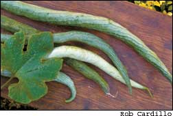
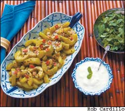

I have been growing snake gourds off and on for the past 10 years, mostly because of their fantastic size and shape - up to 6 feet long - and their easy, pest-free culture. Striped, speckled and looking very much like dangling green serpents, snake gourds are one of the vegetables that elicit frequent comments from my garden visitors
Ornamental value aside, I always assumed snake gourds tasted like Chinese bitter melons because the two are closely related, and both have a red, slimy seed mass when ripe. Quite the contrary: Snake gourds taste surprisingly like cucumbers. Once I discovered the many excellent ways they are prepared in flavorful chutneys, as zesty pickles and in a host of other Asian dishes, I became an instant convert to their culinary possibilities - and you will too!
Perhaps I should clarify that there are two distinct categories of snake gourds offered by U.S. seed companies. One is a long, ornamental gourd that develops a hard shell when ripe; the other is the waxy-skinned snake gourd discussed here, a vegetable described botanically as Trichosanthes anguina or T. cucumerina. Its genetic origin is the Indian sub-continent, but today, the snake gourd is grown all over the world, especially in tropical regions. It is one of the most popular culinary vegetables in southern India, where many distinct varieties have been developed. Several are worth mentioning here: ‘India Short,’ which resembles a large cucumber with nearly white skin; ‘Extra Long Dancer,’ which is about 4 inches in diameter and the most snakelike in appearance; ‘White Glory,’ a medium-long variety with white skin, and ‘Baby,’ a short, white-skinned variety recently developed by the College of Horticulture at the Kerala Agriculture University in India.
Within the past 10 years, many Indian scientists have taken a great interest in the snake gourd for several reasons: It adapts well to the vegetarian cookery of several Indian religious sects; it is highly productive as a field crop, and the plant has a long association with ayurvedic medicine, which employs it as a cooling ingredient.
All this adds up to a challenging new item for American kitchen gardens as well, and yet snake gourds are not really new at all to our part of the world. Seeds were sent to Europe from China in about 1720, and thus the plant became well known to the European and American botanical communities, although it was grown mostly out of curiosity. It is believed that the great English horticulturist Philip Miller grew the gourd in 1755, and Thomas Jefferson tried it in the 1820s.
But horticulturists were intrigued by more than the long, curiously shaped fruit: The snake gourd’s white, frilly, night-blooming flowers and its rampant vine made it a striking addition to hothouse displays of the time.
But being a tropical plant that requires warm nights to form fruit, the snake gourd never really caught on in Europe. Today, thanks to large Indian communities in the United States, the gourds can be purchased in most Asian markets year-round, and seeds are available from several U.S. mail-order companies.
The snake gourd variety I grow is ‘Extra Long Dancer’ (see photo, below). I chose it because I can grow only one variety at a time, to prevent cross-pollination, and I wanted to see just how long I could get it to grow. ‘Extra Long Dancer’ also produces a lot of edible gourds, and I like the long, narrow shape of this variety for cooking. (Shorter varieties seem to have more waste.)
For the experimentally inclined cook, the best selection of snake gourd seed varieties can be purchased from Evergreen Seeds in California. Each of these types can be used in many kinds of recipes. For example, the white-skinned varieties often are used in chutneys or dishes calling for coconut milk. Many recipes are available through the Internet from Indian Web sites. One excellent place to look for recipes is The Hindu, India’s national English-language newspaper (go to www.thehindu.com and search for “snake gourd”). The only drawback is that some of the local Indian ingredients are not readily available in North America, especially fresh leaves of the curry plant.
But the snake gourd is quite adaptable. It can be stuffed, stir-fried, baked and prepared in the same manner as zucchini. In the recipe on below, I have created a simple curry that can be considered a light side dish for a meal where several types of curry are served. It can make an excellent vegetarian lunch, too, best eaten as a dip or topping on traditional Indian breads
The culture of the snake gourd is similar to that of the cucumber, but for those gardeners who want to grow the gourd and also save seeds, a few tricks are worth knowing. First, this is not a vegetable that can be grown on the ground. You will need a trellis, arbor or chain-link fence to let the plant run free because each vine can grow as long as 20 feet. The support structure must be sturdy, too, because of the fruit’s weight. City gardeners with unsightly walls to cover could use this vegetable as a fast-growing screen, and rooftop gardeners can grow it in tubs if they provide strong overhead trellising for support. Fruit formation is not usually a problem unless you happen to live in areas with cool summer evenings. A damp, rainy climate like the Pacific Northwest also is detrimental.
I would go by this rule of thumb: If you can grow an abundance of lima beans in your area, then you can grow snake gourds. The insects that pollinate limas also like the flowers on snake gourds, so it’s a good idea to plant one near the other.
Fruit set is better in the tropics because particular moths there pollinate the flowers, but the yield of each vine is so high you probably won’t notice this in a more northerly garden. The trick to getting good fruit here is to start the plants early indoors and to plant them out as soon as you can plant beans. The larger the vines the better: I use 6-inch pots so that root disturbance is minimal. This will give them the head start they need in order to set fruit during the hottest part of the summer.
The gourds are ready to eat when they are young, about 40 to 50 days from planting, depending on the weather. For the truly long varieties, this means they are ready at no longer than 16 to 18 inches. There should be few if any developed seeds, and the seed mass should be white. For the short varieties, 6 to 8 inches seems to be the ideal harvest length.
When the fruit is fully ripe, it is inedible, turning orange and crumbling to mush. The ripe, red, gelatinous mass that holds the seeds in place, however, can be used like tomato sauce in cooking or applied to ayurvedic remedies. The ripe seeds themselves are dark gray, and while they are nutritionally equal to cashews or almonds, they should not be consumed by humans due to complex compounds with strong emetic and purgative properties. They do, however, make excellent fodder for livestock.
When saving seed season to season, discard any that are light-colored or white; they will not germinate. Even in India, germination rates for the best seeds hover at about 60 percent, so always keep on hand more seeds than you think you need, and plant extra for precaution. Furthermore, renew your seeds every two or three years; their viability drops off quickly after that.
William Woys Weaver’s Pennsylvania garden is jampacked with delicious, exotic vegetables. He is the author of 100 Vegetables and Where They Came From.
2 cups plain yogurt
½ cup chopped mint
8 ounces snake gourd, trimmed,
seeded and chopped
2 tablespoons cold-pressed sesame oil or any preferred cooking oil
1 teaspoon black mustard seeds
1 large garlic clove, minced
1 tablespoon minced hot red pepper, or to taste
1 tablespoon sugar
1 tablespoon curry powder
½ cup hot water
2 teaspoons salt
Put the yogurt and mint in separate serving bowls on the table. Wash and cut the gourds in half lengthwise. Remove the pith and small seeds. Chop and weigh. Heat the oil in a sauté pan and add the mustard seeds. When the seeds begin to crackle and pop, add the snake gourd, garlic, red pepper, sugar and curry powder. Stir, cover and let the curry mixture cook over a medium-high heat for 3 minutes, then add a half cup hot water and continue cooking for 5 minutes or until the gourd is thoroughly hot, but not soft. Season with salt and serve immediately. To eat the curry, mix it with the yogurt and chopped mint, and then spread this on hot nan bread or pita bread
Evergreen Seeds
Anaheim, Calif
(714) 637-5769
Foothills Farm
Newark, Ohio
(877) 346-8445
Seed Savers Exchange
Decorah, Iowa
(563) 382-5990
(Snake gourd seeds are only available to Seed Savers members, not through the commercial catalog.)
The Banana Tree
Easton, Pa
Sand Mountain Herbs
Fyffe, Ala
Heirloom Vegetable Gardening: A Master Gardener’s Guide to Planting, Seed Saving and Cultural History by William Woys Weaver, now on CD. If you want to explore the fabulous flavors, fascinating history and amazing diversity of vegetables, this is the book to start with. Food historian and Mother Earth contributing editor Will Weaver profiles 280 heirloom varieties, with authoritative growing advice and incredible recipes. First published in 1997, Heirloom Vegetable Gardening has since been out of print, with used copies selling online for as much as $300. We are proud to present the original text, with color photos, as a digital book on CD-ROM. Order now.
|
ROB CARDILLO Snake gourds make delicious vegetarian curries. |
 ROB CARDILLO 'Extra Long Dancer’ snake gourds. |
 ROB CARDILLO Snake gourds make delicious vegetarian curries. |